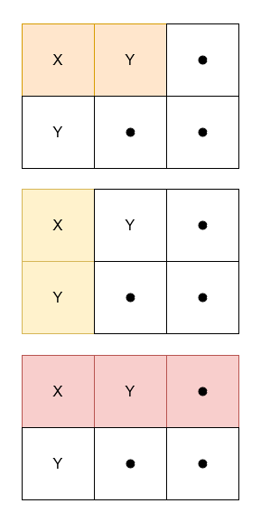

| Category | Difficulty | Likes | Dislikes |
|---|---|---|---|
| Algorithms | Medium | 159 | 26 |
array | matrix | prefix-sum
microsoft
Given a 2D character matrix grid, where grid[i][j] is either 'X', 'Y', or '.', return the number of submatrices that contain:
grid[0][0]'X' and 'Y'.'X'.
Example 1:
Input: grid = [["X","Y","."],["Y",".","."]]
Output: 3
Explanation:

Example 2:
Input: grid = [["X","X"],["X","Y"]]
Output: 0
Explanation:
No submatrix has an equal frequency of 'X' and 'Y'.
Example 3:
Input: grid = [[".","."],[".","."]]
Output: 0
Explanation:
No submatrix has at least one 'X'.
Constraints:
1 <= grid.length, grid[i].length <= 1000grid[i][j] is either 'X', 'Y', or '.'.